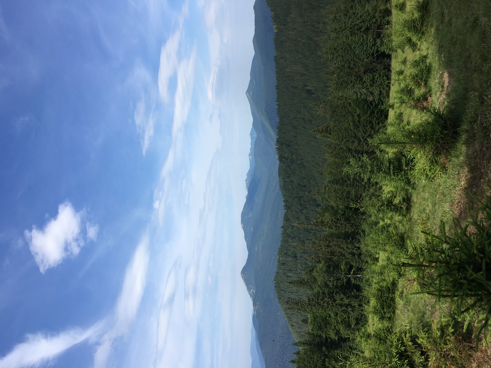

This is Chernivtsi University. One of the most beautiful places
I visited in the city I fell in love with. It gave a sense of
grandeur. While I was walking through the old Austrian architecture,
I felt brought back a few hundred years back. Really felt like being
in a film and I understood why this university is the pride of the
city which overall seems pretty small and quiet. Even though the city
of Chernivtsi is small compared to other cities, it's worth going there
because it's really cosy and it's enjoyable seeing the smaller parts
of a country where rarely a tourist would think of going.

Carpathian mountains were the first big mountains I saw in my life.
The dark green color of the woods brought a warm feeling and the landscape
left me with the feeling of surprise. The road to them through the forest
with a Jeep gave a lot of excitement and I had the chance to soak up the views
of nature to the maximum. To anyone wondering how you can travel and see new things
while also relaxing mountains are the option because viewing such beauty outside cities
is refreshing. I extremely recommend visiting Carpatian mountains especially because
forests growing on such heights make you smile and the views on the top are worth it.
Witnessing history while travelling is something that makes me feel more alive.
The final spot in my trip was a visit to Kyiv where I saw the centre of the city.
It was magnificent to witness the heart of Ukraine and one of the biggest cities
in Europe with my own eyes. While looking at the Independence Square which photo
is shown on the left, I felt like I was experiencing together with Ukrainians the
revolution and fight for freedom that happened there. These moments are the reason
I have a desire to travel.